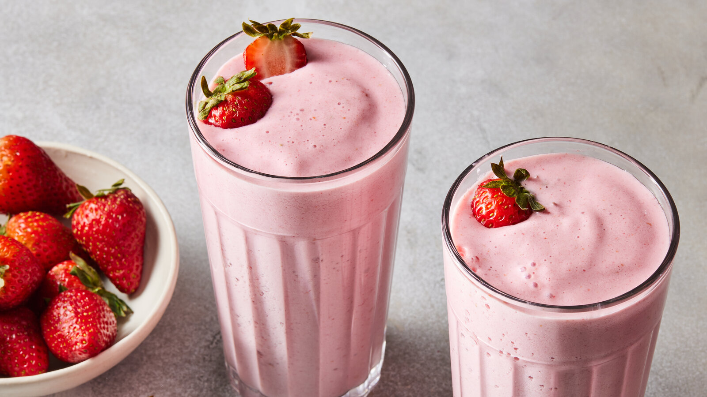

młoda marchewka drobna - 5 szt.
pomarańcza - 2 szt.
ananas - 0,5 szt.
woda - 150 ml
Pióropusz i spód ananasa odcinamy. Skórkę owocu odcinamy, prowadząc nóż wzdłuż miąższu. Staramy się odciąć wszystkie pozostałości po skórce. Obrany ananas przekrawamy wzdłuż na 4 części. Wycinamy twardy środek. Miąższ ananasa kroimy na mniejsze kawałki i przekładamy do kielicha blendera lub do wysokiego naczynia.
Dodajemy pomarańcze obrane ze skórki i podzielone na cząstki, minimarchewki i wodę. Całość miksujemy na gładkie, jednolite smoothie.
Gotowe smoothie przelewamy do szklanek. Spożywamy od razu po przygotowaniu. WSKAZÓWKA! Jeśli chcesz przechować smoothie, przelej je do czystego pojemnika, szczelnie zamknij i przechowuj w lodówce do kilku godzin - smoothie ze świeżych owoców najlepiej smakuje tuż po przyrządzeniu.